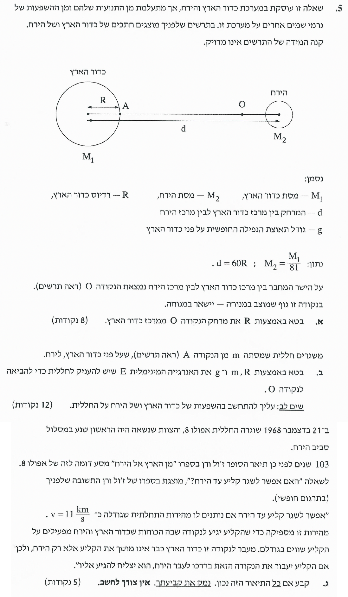
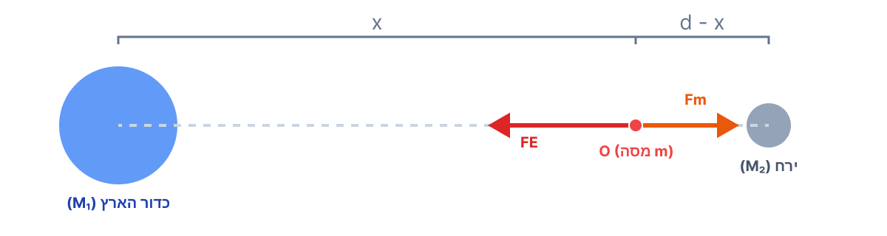

פתרון מלא ומפורש הכולל ניתוח שוויון כוחות, חישוב אנרגיית שיגור מינימלית והערכת מודל טקסטואלי היסטורי.

תרשים כוחות (FBD) על גוף בנקודה O

נרשום את משוואת הכוחות עבור הגוף בנקודה O. כוח הכבידה שכדור הארץ מפעיל שמאלה \( (F_E) \) חייב להיות שווה בגודלו לכוח הכבידה שהירח מפעיל ימינה \( (F_M) \):
נצמצם משני האגפים את קבוע הכבידה האוניברסלי \( G \) ואת מסת הגוף \( m \), ונציב את הנתונים המבטאים את הקשרים בין המסות והמרחקים:
נצמצם גם את המסה \( M_1 \):
כיוון שמדובר במרחקים (גדלים חיוביים), ניתן להוציא שורש ריבועי משני אגפי המשוואה בבטחה ולפתור את המשוואה האלגברית:
מסקנה: \( x = 54R \)
כדי למצוא את האנרגיה המינימלית הנדרשת, נדרוש שהחללית תגיע לנקודה O עם מהירות אפס \( (v_f = 0) \). אם תגיע לשם, מעבר לנקודה זו כוח המשיכה של הירח ימשוך אותה אליו והיא לא תצטרך עוד אנרגיה. נחשב את האנרגיה המכנית הכוללת במצב התחלתי (על פני כדור הארץ) ובמצב סופי (בנקודה O).
כאשר החללית ממתינה על כן השיגור בכדור הארץ, יש לה כבר אנרגיה פוטנציאלית כובדית. האנרגיה שאנו מתבקשים "להעניק" לה ניתנת בצורה של מהירות התחלתית, ולכן אנרגיה זו שווה לאנרגיה הקינטית שלה \( (E_k = E) \).
מרחק החללית ממרכז הירח הוא \( d - R = 60R - R = 59R \). נחשב תחילה את האנרגיה הפוטנציאלית הכוללת במצב ההתחלתי \( (U_i) \), על ידי הצבת נתון מסת הירח \( M_2 = M_1/81 \):
כעת נוסיף את האנרגיה הקינטית הלא ידועה \( (E) \) כדי לרשום במפורש את האנרגיה המכנית הכוללת במצב ההתחלתי \( (E_{tot,i}) \):
האנרגיה הקינטית היא אפס. מרחק מכדור הארץ \( 54R \), מרחק מהירח \( 60R - 54R = 6R \).
נחשב את המכנה המשותף בתוך הסוגריים \( (54 \cdot 9 = 486) \):
כעת עלינו לבטא את התשובה באמצעות \( g \). על פני כדור הארץ, כוח הכבידה הפועל על מסה מוגדר כמשקלה \( (F = mg) \). נשווה בין חוק הכבידה העולמי להגדרת המשקל:
נציב קשר זה בביטוי שקיבלנו עבור האנרגיה:
מסקנה: \( E = mgR \left( \frac{14045}{14337} \right) \approx 0.98 \cdot mgR \)
התיאור של ז'ול ורן, כמו גם המסקנה הסופית שלו, נכונים במהותם. עם זאת, קיים בטקסט אי-דיוק פיזיקלי מסוים שעליו נעמוד מיד.
החלק הנכון (דינמיקת התנועה): בנקודה O, שקול הכוחות הפועל על החללית הוא אפס \( (F_E = F_M) \). ברגע שהחללית חוצה את נקודה O וממשיכה לכיוון הירח מתרחש היפוך. על פי חוק הכבידה העולמי שהוצג למעלה, גודל כוח המשיכה נמצא ביחס הפוך לריבוע המרחק \( (F \propto \frac{1}{r^2}) \). מכאן נובע כי:
1. המרחק אל מרכז הירח קטן, ולכן כוח המשיכה של הירח גדל.
2. המרחק ממרכז כדור הארץ גדל, ולכן כוח המשיכה של הארץ קטן.
כתוצאה מכך, מעבר לנקודה O, מתקיים אי-שוויון: \( F_M > F_E \). שקול הכוחות מכוון כעת אל הירח. לפי החוק השני של ניוטון, שקול כוחות זה יאיץ את הקליע אל עבר הירח ללא צורך בהפעלת מנועים כלשהם.
אי-הדיוק (ההסתייגות): ורן טוען כי מעבר לנקודה O "כדור הארץ כבר אינו מושך את הקליע". מבחינה פיזיקלית זו טעות. על פי חוק הכבידה העולמי, כוח המשיכה דועך ביחס הפוך לריבוע המרחק אך לעולם אינו נעלם לחלוטין. כדור הארץ ממשיך למשוך את הקליע, אלא שמשיכה זו פשוט חלשה יותר מהמשיכה של הירח.
מסקנה סופית: על אף ההסתייגות לגבי אי-היעלמותו המוחלטת של כוח משיכת כדור הארץ, התיאור הדינמי של התנועה לאחר מעבר נקודת השוויון הוא נכון במהותו.